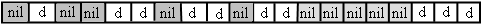
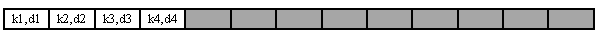
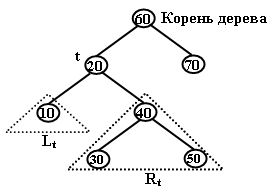

|
|
||||||
|
Для многих задач одной из основных проблем является поиск фрагментов информации в больших томах ранее сохраненных данных. Данные обычно организуются в ассоциативные множества, элементами которых являются записи. Каждая запись имеет ключ, являющийся уникальным идентификатором данных записи в множестве. Поиск данных (записи с данными) организуется по этому уникальному ключу. Целью поиска является предоставление доступа к данным, имеющим заданный ключ. Это может быть отдельный экземпляр данных или группа данных. Обычно такое множество организуется в структуру, называемую таблицей символов [4]. Таблица символов - это структура элементов с ключами, которая поддерживает две операции: вставку нового элемента и возврат элемента с заданным ключом. Кроме этих основных операций таблица поддерживает операции удаления, редактирования элементов, выбора k-го по величине ключа элемента, сортировки элементов в форме отображения в порядке возрастания ключей, разбиения и объединения таблиц. Таблицу можно определить как абстрактный тип данных, организующий ассоциативное множество с эти набором операций. Если данные, включаемые в таблицу, имеют не стандартный тип, то для того, чтобы включать их в таблицу, необходимо для нестандартного типа переопределить операции запроса значения ключа, операции сравнения ключей (=, >, <), операции проверки на наличие данных с заданным ключом. В качестве признака отсутствия данных может быть использован элемент множества с заранее выбранным ключом, который не могут иметь элементы с реальными данными. При разработке таблицы важно решить вопрос о возможности включения в таблицу элементов с одинаковыми ключами. Некоторые приложения не допускают наличие дублированных ключей в множестве. Другие приложения предполагают наличие нескольких элементов с одинаковым ключом в мультимножестве. Хранение элементов с одинаковыми ключами можно организовать различными способами. например, можно создать главную таблицу, элементы которой содержат ключ и список данных с этим ключом. В этом случае в результате поиска по ключу пользователю возвращается весь список данных с этим ключом. Или можно содержать элементы с одинаковым ключом в главной структуре и при поиске сообщать первый найденный элемент. Но в этом случае этот элемент будет перекрывать доступ к остальным элементам с этим ключом. Можно усложнить запрос на поиск и задавать дополнительный параметр - номер элемента с заданным ключом или вторичный уникальный ключ. Можно реализовать операцию поиска от метки, когда поиск ведется от точки, в которой завершился предыдущий поиск. Но все эти усовершенствования усложняют операции над таблицей и замедляют работу с е структурой. Реализация таблицы, набор и алгоритмы операций зависят от относительной частоты операций поиска, вставки и удаления. Можно выбрать реализацию, обеспечивающую быстрый поиск за счет замедления операций вставки и удаления. и Наоборот, можно выбрать быстрые вставку и удаление за счет замедления поиска. Этими причинами определяется множество известных вариантов организации таблиц.
Таблица с прямой индексацией по ключу Таблица с индексацией по ключу представляет собой массив, в который элементы заносятся по индексу, соответствующему ключу. Если диапазон значений ключа невелик, то потребуется небольшой по размеру массив, элементы которого содержат или не содержат данные. Не занятые позиции содержать особое значение данных - nil.

Массив может содержать только данные. хранить ключи в массиве нет необходимости, поскольку индексы данных соответствуют их ключам. Но таблица не допускает дублированных ключей. Иначе элементы массива должны содержать вместо данных ссылку на список с данными с одинаковым ключом. Если разброс значений ключа велик, то может потребоваться массив с очень большой размерностью. Даже. если удастся разместить массив в памяти компьютера, он будет использоваться неэффективно, поскольку большинство позиций будет содержать значение nil. Поэтому, таблицу рекомендуется к использовать для данных с ключами, имеющими небольшой интервал значений. Реализация операций для таблицы с прямой индексацией - T тривиальна:
Операция поиска данных по ключу k: Search (T, k) 1 return T[k]
Операция вставки данных x по ключу k: Insert (T, k,x) 1 T[k] ← x
Операция удаления данных с ключом k: Delete (T, k) 1 T[k] ← nil
В таблице с прямой индексацией по ключу операции поиска по ключу, вставки и удаления имеют вычислительную сложность - О(1).
Таблица на базе списка Другой способ организации таблицы - список на базе массива. 
Здесь возможны два варианта - неупорядоченное и упорядоченное по ключам размещение элементов. При неупорядоченном хранении элементов возможна быстрая операция вставки нового элемента в конец списка. Но, при поиске и удалении по ключу придется выполнять полный перебор всех элементов списка То есть, вычислительная сложность операции вставки - О(1), операций поиска и удаления - О(n). В случае упорядоченного по ключам размещения пр вставке элемента в списке подыскивается подходящее место для нового ключа и элементы сдвигаются для освобождения позиции для нового элемента. При удалении элемента также выполняется сдвиг элементов, следующих за удаленным. Вычислительная сложность операций вставки и удаления определяется средним числом выполняемых сдвигов и имеет нотацию О(n). Зато при поиске по ключу в упорядоченной последовательности элементов можно применить бинарный поиск и вычислительная сложность поиска имеет нотацию О(log2 n). Выбор упорядоченного или неупорядоченного списка для таблицы зависит от относительной частоты операций вставки, удаления и поиска, выполняемых приложением.
Таблица на базе бинарного дерева поиска Для решения проблемы излишних затрат на вставку и удаление при сохранении быстрого бинарного поиска используется двоичное дерево поиска. Двоичное дерево поиска (Binary Search Tree – BST) представляет упорядоченное, иерархическое, ассоциативное множество элементов, между которыми существуют структурные отношения «предки – потомки». Каждый элемент ассоциативного множества состоит из данных и уникального ключевого значения, идентифицирующего данные среди прочих в множестве. Положение элемента в дереве определяется ключевым значением данных при сопоставлении его с другими ключами, присутствующими в дереве [2, 5].  Каждый элемент, называемый узлом BST-дерева, имеет потомков, разбитых на два подмножества – левое и правое поддеревья. Непосредственные потомки элемента называются левым и правым сыновьями. Каждый узел BST-дерева удовлетворяет следующим условиям :
Такая организация данных позволяет использовать BST-дерево для эффективного двоичного доступа по ключам к элементам множества. |
||||||
|
|